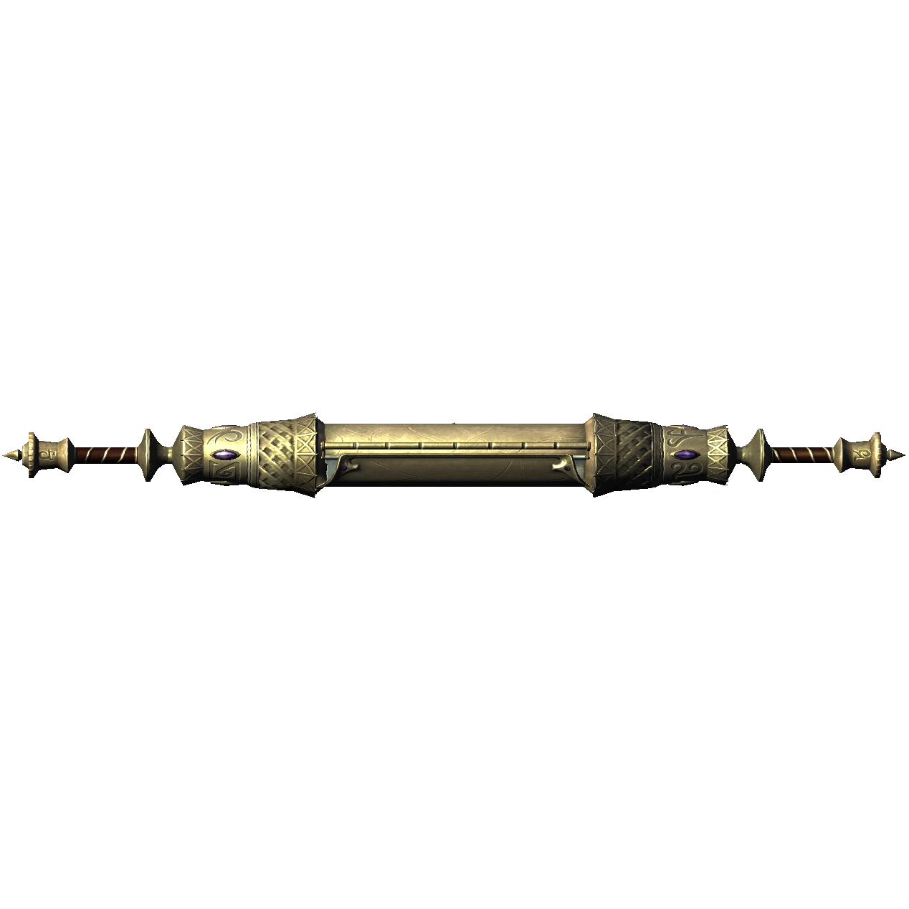

INDEX
Tullius's Ferry
The Sole Survivor's Railroad

[스카이림] 뷰리다 1.2 관련 글들
[스카이림] 애니림 관련 글들
질문,피드백,로그
- (후방)언포기빙 적응하니까 나쁘지 않네
- 애니림 F 점프력
- 애니림 MCM 설정 SL Anim Loader
- 애니림 NPC 텍스쳐 일부 색이 다른건 왜그럴까
- 애니림 immersive equipment display 단축키가 모임
- 애니림 npc 의상 보라색
- 애니림 v2 이거 위치 어떻게 옴김？
- 애니림 건피
- 애니림 걷는 자세 엉거주춤해지는거 원인 아시는븜!!!!
- 애니림 궁금해요
- 애니림 나침반
- 애니림 눈밑 점 어캐없앰？
- 애니림 랜턴 관련 질문
- 애니림 메뉴(？) 프레임드랍
- 애니림 바슬 머돌려야함？
- 애니림 발톱끼는 E키 먹통 문제 해결방법점
- 애니림 세이브 로드하면 터지는 크래시
- 애니림 속눈썹 관통？
- 애니림 스펠 핫바에 마법 등록할때 마법 구분이 안감
- 애니림 시작했는데 대화 자막 안 나오는 건 무슨 모드임？
- 애니림 아무리 해도 신체 일부 텍스쳐 색깔이 안맞음..
- 애니림 야스후에 정액이 안묻는데
- 애니림 얼굴에 거슬리는 검은 홍조생기는건 무슨 문제임？
- 애니림 옷 리텍 무슨 모드임？
- 애니림 와바잭 퀘스트 버그 겪어본 사람 있냐？
- 애니림 자동루팅모드 뭐임？
- 애니림 저사양 질문
- 애니림 전체화면 하는방법..
- 애니림 질문
- 애니림 질문좀 해도됨？
- 애니림 창모드_전체창모드
- 애니림 추가동료 몸이 이상해요..
- 애니림 클래식 BETA 0.1) 뱀파이어로드 버그 수정 및 하콘에서 진행 안될시
- 애니림 클래식 F v1.2) 무장해제 CTD 해결했음
- 애니림 클래식 F v1.2) 물리관련 ctd 뜨면 참고해봐
- 애니림 클래식 F 확정 ctd？
- 애니림 클래식 사양낮아서 Synthesis 돌려봤는데 이게 맞나요？
- 애니림 클래식 질문!
- 애니림 클래식 피드백
- 애니림 클래식) 저사양 설명 1번이 클래식버전과는 호환되지않음 빼라는 모드 뺏을 경우 마스터파일 누락 발생
- 애니림 클래식에 유리아나를 더함했는데 뭔가 잘못됨....
- 애니림 클래식에서 설정되어 있는 키 변경 어떻게 해야하나요？
- 애니림 파써낙스 폴리모프 이후 사라짐
- 애니림 프리셋 적용방법을 모르겠음
- 애니림 프리징 질문
- 애니림 피부 그림자 노이즈 & 투구 질문
- 애니림 화면 이상
- 애니림 후기겸 피드백겸 개인저장용
- 애니림) 가끔 근접해서 암습 강공격으로 적 죽이면 게임이 프리징되는데 혹시 해결방법 아는 사람 있음？
- 애니림2.2 초반 미르물니어 싸우기 전 합류지점에서 크래쉬
- 애니림F 1.2 업뎃 후 새 게임 시작이 안됨
- 애니림F 1.3V) 커쉐 LightLimitFix 비활성화하고 셰이더캐시 삭제 후 재컴파일하셈
- 애니림F SOS 쥬지달기 질문
- 애니림F 프리셋 폴더 위치가 어디임？
- 애니림v2 오바디 프리셋 추가하는 법 없나...
- 애니림에서 LOTD 상인패치 작동 조건 찾았다
- 애니림은 OAR 로그 보는 단축키 뭐임？
- 어느새부터인가 케릭터에 ＋가 뜨는데 혹시 원인아는사람있어..？
- 오바디 내가 생각하는게 맞나？
- 자유시점시 포토모드, sam메뉴 사용시 시점 고정 질문
- 잔디 모드 질문 및 추천 좀
- 혹시 애니림 이번 업뎃에 투구 투명화 하는 모드 뭔지 아는 사람 있음？
[스카이림] 정보 념글
[스카이림] 질문 념글
[폴아웃] 스위트폴 테스트
[폴아웃] 짬통팩 테스트
- ●(후방)언포기빙 적응하니까 나쁘지 않네
- ●애니림 F 점프력
- ●애니림 MCM 설정 SL Anim Loader
- ●애니림 NPC 텍스쳐 일부 색이 다른건 왜그럴까
- ●애니림 immersive equipment display 단축키가 모임
- ●애니림 npc 의상 보라색
- ●애니림 v2 이거 위치 어떻게 옴김？
- ●애니림 건피
- ●애니림 걷는 자세 엉거주춤해지는거 원인 아시는븜!!!!
- ●애니림 궁금해요
- ●애니림 나침반
- ●애니림 눈밑 점 어캐없앰？
- ●애니림 랜턴 관련 질문
- ●애니림 메뉴(？) 프레임드랍
- ●애니림 바슬 머돌려야함？
- ●애니림 발톱끼는 E키 먹통 문제 해결방법점
- ●애니림 세이브 로드하면 터지는 크래시
- ●애니림 속눈썹 관통？
- ●애니림 스펠 핫바에 마법 등록할때 마법 구분이 안감
- ●애니림 시작했는데 대화 자막 안 나오는 건 무슨 모드임？
- ●애니림 아무리 해도 신체 일부 텍스쳐 색깔이 안맞음..
- ●애니림 야스후에 정액이 안묻는데
- ●애니림 얼굴에 거슬리는 검은 홍조생기는건 무슨 문제임？
- ●애니림 옷 리텍 무슨 모드임？
- ●애니림 와바잭 퀘스트 버그 겪어본 사람 있냐？
- ●애니림 자동루팅모드 뭐임？
- ●애니림 저사양 질문
- ●애니림 전체화면 하는방법..
- ●애니림 질문
- ●애니림 질문좀 해도됨？
- ●애니림 창모드_전체창모드
- ●애니림 추가동료 몸이 이상해요..
- ●애니림 클래식 BETA 0.1) 뱀파이어로드 버그 수정 및 하콘에서 진행 안될시
- ●애니림 클래식 F v1.2) 무장해제 CTD 해결했음
- ●애니림 클래식 F v1.2) 물리관련 ctd 뜨면 참고해봐
- ●애니림 클래식 F 확정 ctd？
- ●애니림 클래식 사양낮아서 Synthesis 돌려봤는데 이게 맞나요？
- ●애니림 클래식 질문!
- ●애니림 클래식 피드백
- ●애니림 클래식) 저사양 설명 1번이 클래식버전과는 호환되지않음 빼라는 모드 뺏을 경우 마스터파일 누락 발생
- ●애니림 클래식에 유리아나를 더함했는데 뭔가 잘못됨....
- ●애니림 클래식에서 설정되어 있는 키 변경 어떻게 해야하나요？
- ●애니림 파써낙스 폴리모프 이후 사라짐
- ●애니림 프리셋 적용방법을 모르겠음
- ●애니림 프리징 질문
- ●애니림 피부 그림자 노이즈 & 투구 질문
- ●애니림 화면 이상
- ●애니림 후기겸 피드백겸 개인저장용
- ●애니림) 가끔 근접해서 암습 강공격으로 적 죽이면 게임이 프리징되는데 혹시 해결방법 아는 사람 있음？
- ●애니림2.2 초반 미르물니어 싸우기 전 합류지점에서 크래쉬
- ●애니림F 1.2 업뎃 후 새 게임 시작이 안됨
- ●애니림F 1.3V) 커쉐 LightLimitFix 비활성화하고 셰이더캐시 삭제 후 재컴파일하셈
- ●애니림F SOS 쥬지달기 질문
- ●애니림F 프리셋 폴더 위치가 어디임？
- ●애니림v2 오바디 프리셋 추가하는 법 없나...
- ●애니림에서 LOTD 상인패치 작동 조건 찾았다
- ●애니림은 OAR 로그 보는 단축키 뭐임？
- ●어느새부터인가 케릭터에 ＋가 뜨는데 혹시 원인아는사람있어..？
- ●오바디 내가 생각하는게 맞나？
- ●자유시점시 포토모드, sam메뉴 사용시 시점 고정 질문
- ●잔디 모드 질문 및 추천 좀
- ●혹시 애니림 이번 업뎃에 투구 투명화 하는 모드 뭔지 아는 사람 있음？